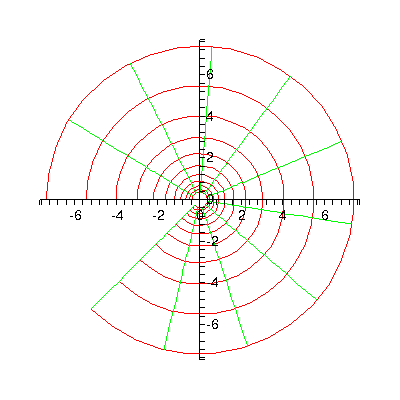
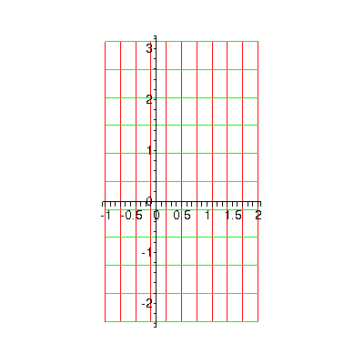
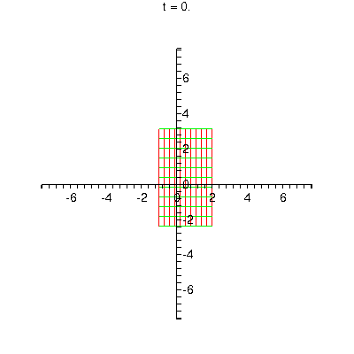
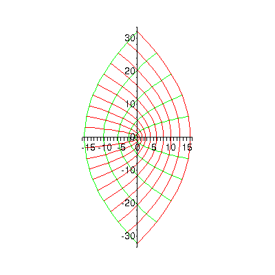
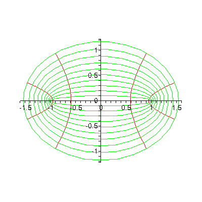

Visualizing the exponential function in Maple
| > | with(plots): |
Warning, the name changecoords has been redefined
The most convenient method for most complex visualizations is the conformal function. I like to set the following option, to make circles look like circles and not ellipses.
| > | setoptions( scaling=constrained ); |
| > | conformal( exp(z), z=-1-0.75*Pi*I..2+Pi*I, numxy=[32,32] ); |

The above is actually the image of a grid of rectangles after exp is applied. Here is the "before" picture.
| > | conformal( z, z=-1-0.75*Pi*I..2+Pi*I ); |

It's amusing, though mathematically dubious, to make a little movie of the transformation.
| > | animate( conformal, [ t*exp(z) + (1-t)*z, z=-1-0.75*Pi*I..2+Pi*I, numxy=[32,32]], t=0..1 ); |

You can do this kind of visualization with any complex function, though it's not always illuminating.
| > | conformal( z^2, z=0-4*I..4+4*I ); |

| > | conformal( sin(z), z=-Pi..Pi+I, numxy=[30,30] ); |

| > |